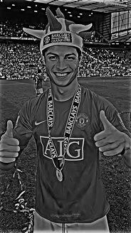

Galeria: Momentos em Preto e Branco


.webp)

Mais do que um jogador, uma inspiração. A lenda que redefiniu o futebol.
Descubra MaisNascido em 5 de fevereiro de 1985 na Ilha da Madeira, Portugal, Cristiano Ronaldo dos Santos Aveiro emergiu de origens humildes para se tornar uma das maiores estrelas do esporte mundial. Sua paixão pelo futebol foi evidente desde cedo.
Sua jornada profissional começou no **Sporting CP**, onde seu talento bruto rapidamente chamou a atenção dos grandes clubes europeus. Em 2003, aos 18 anos, transferiu-se para o **Manchester United**, sob a tutela de Sir Alex Ferguson, onde desenvolveu seu jogo e conquistou sua primeira Liga dos Campeões e Bola de Ouro.
A era mais gloriosa de sua carreira começou em 2009, com a mudança para o **Real Madrid**. Nos nove anos seguintes, ele quebrou recordes inimagináveis, tornando-se o maior artilheiro da história do clube e erguendo quatro Ligas dos Campeões, cimentando seu lugar na história como um verdadeiro ícone.
Após uma passagem pela **Juventus**, onde continuou a demonstrar sua capacidade de adaptação e faro de gol, CR7 mantém-se no topo, desafiando a idade e as expectativas, sempre em busca de mais glórias.
O auge do reconhecimento individual no futebol mundial.
Dominando o cenário europeu de clubes em múltiplas ocasiões.
Liderando Portugal à conquista de um título inédito.
Superando recordes e marcando seu nome na história do futebol.
Reconhecimento constante de sua excelência em campo.
Motivando milhões com sua dedicação e perseverança.
Precisão letal em frente ao gol.
Arranques explosivos e habilidade para superar adversários.
Domínio nas alturas e cabeceio potente.
Condicionamento físico impecável.
Inteligência tática e capacidade de passe.
Determinação e foco inabaláveis.
Sua influência transcende o esporte, alcançando milhões de fãs.
Um modelo de profissionalismo e dedicação para as novas gerações.
Um legado imortal de números e glórias que redefine a história.